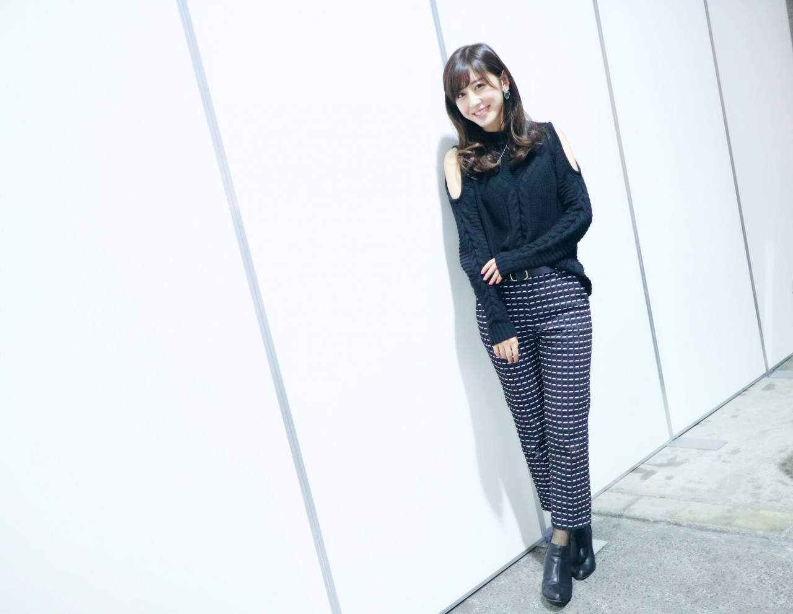
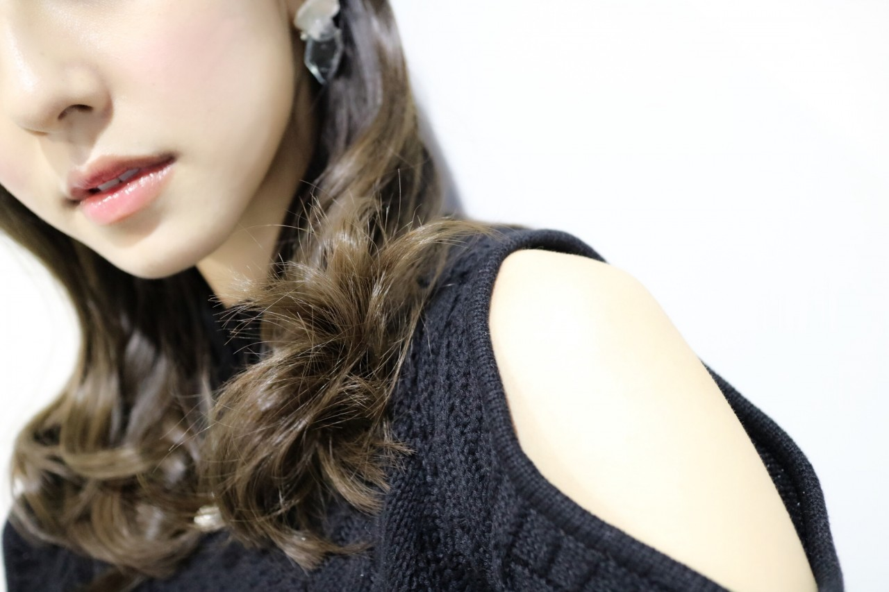
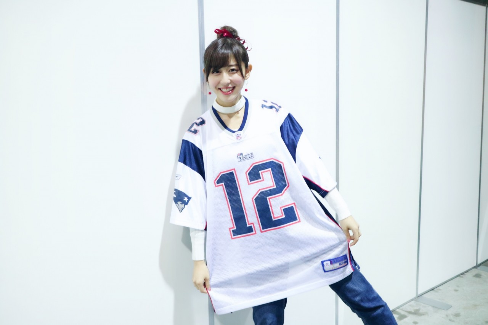

| 2017/02 05 Sun | 独断と偏見ですが |
ちはるーむへようこそ
パシフィコ横浜での個別握手会
来てくださった皆さん、
ありがとうございました！！
皆さんと会えて、
皆さんとじっくり話せて、
元気チャージできました(﹡ˆ ˆ﹡)
これで明日からも頑張れそう(﹡ˆ ˆ﹡)
ありがとう。
今日は2/5！
ということは、明日は2/6！
ということは...明日はスーパーボウル...！
日本時間8時からの放送は見逃せない...！
このワクワク、ウキウキ感を
伝えたくて今日はついに着ちゃいました。
ずっと着たかったやつ。

じゃーん！
ペイトリオッツの12番、
トム・ブレイディ選手のレプリカユニフォーム☺︎
あ、ブレイディだ！と
気付いてくれる方もいてとても嬉しかったな〜
明日の試合、本当楽しみ。
ペイトリオッツ対ファルコンズ、
どっちが勝つんだろう。
ペイトリオッツはブレイディの調子が良い上に
スーパーボウルという大舞台で
何度も勝利に導いてる経験から
明日も安定したプレーを見せてくれるのではないかな〜。
また、ペイトリオッツはディフェンスも強く
攻めも守りも安心した見ていられる気がします。
ファルコンズはライアン率いる
オフェンスの勢いがカギになると私は思います。
どのチームよりも強いオフェンスが
ペイトリオッツのディフェンスを制した時
ファルコンズが全米一位になるのではないでしょうか！
注目選手は、ペイトリオッツのエデルマンと
ファルコンズのフリオ・ジョーンズ！
QBにどうしても注目しがちなのですが
この2人はとにかく凄い！
試合を観ていても2人の名前を聞く回数が
圧倒的に多く、期待値も実践力も高い。
名レシーバー対決にも私は注目です。
そして私の独断と偏見で結果予想！
ずばり...！
ペイトリオッツ 35対17 ファルコンズ
と私は予想します。
(勝手に予想なのであまり気にしないでね☺︎笑)
こんなに予想もしながらワクワクしてるのに
実は明日はお仕事で朝オンタイムで見られないのヽ(；；)丿
だから明日はネットニュース等は絶対見ないようにする！
お家帰ってくるまで！
決めた！
あ〜楽しみ♡♡
------------------------------------------♡
#chihaOOTD
4部

tops : ZARA
pants : Mila Owen
earring : KAKERA
たまには真夏みたいな肩出しトップス！笑
肩出しトップスで上はセクシーにしつつも
パンツでスマートにしてみました。

肩。
5部

tops : レプリカユニフォーム
inner : WEGO
denim : Mila Owen
earring : iki
インナーは、
実はチョーカートップスになっているの！
年始に妹と双子コーデした時に
妹が着ていた服だよ◎
デニムは安定のMila Owen！
Mila Owenのパンツが履きやすいって
最近気付いたので、
今日は4部も5部もです。

髪の毛は、チアリーダーを意識して
お団子にリボンしました☺︎
赤いリボンと赤いイヤリングが
ポイントです！
大人めな私と、スポーティーな私、
どっちが好み？♡
------------------------------------------♡
♬ ChihaMusic
「Memories」MAN WITH A MISSIONさん
聴きやすい声と、
何度も聞きたくなるサウンドに
ハマりました！！
この季節にぴったり。
スノボーとかしてみたいな〜
という気持ちになる。
絶対スノボー出来ないくせに...
"夢の後先へ
夜明けの日が眩しくて
またいつかなって笑い"
冒頭のこの部分が好き。
夢の後先って響きが素敵。
でもサビも好きなんだよなー！
ねえ皆さん！
沈黙の金曜日で何があったの！？
アルピーさんの酒井さんから
なんで私の名前が...！？
ノリだとしても凄い嬉しい(｡-_-｡)！笑
いつかまたお会いしたいな〜◎
おやすみ
斎藤ちはる
コメント(371)
2017/02/05 23:36